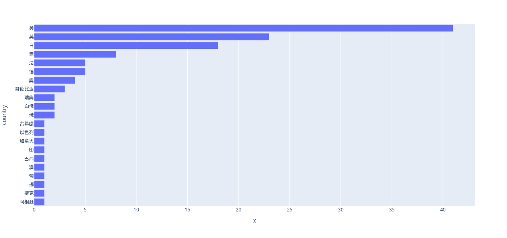

import pandas as pd
from bloxs import B
from IPython.display import HTML
import plotly.express as px
df = pd.read_csv('douban.csv', index_col=False)
---------------------------------------------------------------------------
FileNotFoundError Traceback (most recent call last)
Cell In[2], line 1
----> 1 df = pd.read_csv('douban.csv', index_col=False)
File ~/2023projects/.venv/lib/python3.10/site-packages/pandas/io/parsers/readers.py:912, in read_csv(filepath_or_buffer, sep, delimiter, header, names, index_col, usecols, dtype, engine, converters, true_values, false_values, skipinitialspace, skiprows, skipfooter, nrows, na_values, keep_default_na, na_filter, verbose, skip_blank_lines, parse_dates, infer_datetime_format, keep_date_col, date_parser, date_format, dayfirst, cache_dates, iterator, chunksize, compression, thousands, decimal, lineterminator, quotechar, quoting, doublequote, escapechar, comment, encoding, encoding_errors, dialect, on_bad_lines, delim_whitespace, low_memory, memory_map, float_precision, storage_options, dtype_backend)
899 kwds_defaults = _refine_defaults_read(
900 dialect,
901 delimiter,
(...)
908 dtype_backend=dtype_backend,
909 )
910 kwds.update(kwds_defaults)
--> 912 return _read(filepath_or_buffer, kwds)
File ~/2023projects/.venv/lib/python3.10/site-packages/pandas/io/parsers/readers.py:577, in _read(filepath_or_buffer, kwds)
574 _validate_names(kwds.get("names", None))
576 # Create the parser.
--> 577 parser = TextFileReader(filepath_or_buffer, **kwds)
579 if chunksize or iterator:
580 return parser
File ~/2023projects/.venv/lib/python3.10/site-packages/pandas/io/parsers/readers.py:1407, in TextFileReader.__init__(self, f, engine, **kwds)
1404 self.options["has_index_names"] = kwds["has_index_names"]
1406 self.handles: IOHandles | None = None
-> 1407 self._engine = self._make_engine(f, self.engine)
File ~/2023projects/.venv/lib/python3.10/site-packages/pandas/io/parsers/readers.py:1661, in TextFileReader._make_engine(self, f, engine)
1659 if "b" not in mode:
1660 mode += "b"
-> 1661 self.handles = get_handle(
1662 f,
1663 mode,
1664 encoding=self.options.get("encoding", None),
1665 compression=self.options.get("compression", None),
1666 memory_map=self.options.get("memory_map", False),
1667 is_text=is_text,
1668 errors=self.options.get("encoding_errors", "strict"),
1669 storage_options=self.options.get("storage_options", None),
1670 )
1671 assert self.handles is not None
1672 f = self.handles.handle
File ~/2023projects/.venv/lib/python3.10/site-packages/pandas/io/common.py:859, in get_handle(path_or_buf, mode, encoding, compression, memory_map, is_text, errors, storage_options)
854 elif isinstance(handle, str):
855 # Check whether the filename is to be opened in binary mode.
856 # Binary mode does not support 'encoding' and 'newline'.
857 if ioargs.encoding and "b" not in ioargs.mode:
858 # Encoding
--> 859 handle = open(
860 handle,
861 ioargs.mode,
862 encoding=ioargs.encoding,
863 errors=errors,
864 newline="",
865 )
866 else:
867 # Binary mode
868 handle = open(handle, ioargs.mode)
FileNotFoundError: [Errno 2] No such file or directory: 'douban.csv'
# 译者为空表明是中文作品，也可能是不知道的译者，大约差不多
chinese_book = df[df.iloc[:,3].isnull()==True].count()[0]
d = { "中文": chinese_book, "译文": 250 - chinese_book}
s_by_lang = pd.Series(d)
豆瓣图书排名分析#
fig = px.pie(s_by_lang, values=s_by_lang.values, names=s_by_lang.index)
fig.show()
some html
temp = df.groupby('作者').count().iloc[:,0].sort_values(ascending=0)
by_author = temp.to_frame().reset_index()
by_author.insert(0,'作者排名',list(by_author.index + 1))
by_country_string = df.groupby('country').count().iloc[:,1].sort_values()[:-1]
fig = px.bar(by_country_string, x=by_country_string.values, y=by_country_string.index, height=600)
fig.show()

by_author.head(31).style.hide(axis='index')
| 作者排名 | 作者 | 序号 |
|---|---|---|
| 1 | 三毛 | 7 |
| 2 | 金庸 | 6 |
| 3 | 张爱玲 | 5 |
| 4 | 鲁迅 | 5 |
| 5 | 王小波 | 5 |
| 6 | [奥] 斯蒂芬·茨威格 | 4 |
| 7 | [日] 东野圭吾 | 4 |
| 8 | 龙应台 | 4 |
| 9 | 林达 | 4 |
| 10 | [意] 埃莱娜·费兰特 | 4 |
| 11 | 老舍 | 3 |
| 12 | [意] 伊塔洛·卡尔维诺 | 3 |
| 13 | [哥伦比亚] 加西亚·马尔克斯 | 3 |
| 14 | 李娟 | 3 |
| 15 | [英] 阿加莎·克里斯蒂 | 3 |
| 16 | 古龙 | 3 |
| 17 | [美] 艾萨克·阿西莫夫 | 2 |
| 18 | 刘慈欣 | 2 |
| 19 | 八月长安 | 2 |
| 20 | [美] 卡勒德·胡赛尼 | 2 |
| 21 | [日] 村上春树 | 2 |
| 22 | 刘瑜 | 2 |
| 23 | 白先勇 | 2 |
| 24 | 余华 | 2 |
| 25 | [法] 阿尔贝·加缪 | 2 |
| 26 | [美] 彼得·海斯勒 | 2 |
| 27 | 严歌苓 | 2 |
| 28 | [英] 乔治·奥威尔 | 2 |
| 29 | [德] 赫尔曼·黑塞 | 2 |
| 30 | [英] 毛姆 | 2 |
| 31 | [英] 肯·福莱特 | 2 |
%%html
<html>
<link href="https://cdn.jsdelivr.net/npm/bootstrap@5.3.0-alpha1/dist/css/bootstrap.min.css" rel="stylesheet" integrity="sha384-GLhlTQ8iRABdZLl6O3oVMWSktQOp6b7In1Zl3/Jr59b6EGGoI1aFkw7cmDA6j6gD" crossorigin="anonymous">
<script src="https://cdn.jsdelivr.net/npm/bootstrap@5.3.0-alpha1/dist/js/bootstrap.bundle.min.js" integrity="sha384-/mhDoLbDldZc3qpsJHpLogda//BVZbgYuw6kof4u2FrCedxOtgRZDTHgHUhOCVim" crossorigin="anonymous"></script>
</html>
by_author_sum = by_author.groupby('序号').count()
by_author_sum['card'] = [f'''
<div class="card text-center">
<div class="h3 card-header bg-primary">
上榜{num}部
</div>
<div class="card-body bg-secondary">
<p class="text-center display-4">{writer}<br>人</p>
</div>
</div>
''' for num, writer in zip(by_author_sum.index, by_author_sum['作者'])]
ss2 = '<div class="card-group">'+''.join(list(by_author_sum.sort_index(ascending= False).iloc[:,2]))+'</div>'
HTML(ss2)
上榜7部
1
人
上榜6部
1
人
上榜5部
3
人
上榜4部
5
人
上榜3部
6
人
上榜2部
15
人
上榜1部
152
人
把前几名的作品显示出来#
top10 = by_author.head(10).copy()
top10['wcard'] = [f'''
<div class="card text-center" >
<div class="card-body bg-secondary">
<h1 class="card-title">{author}</h1>
<h3 class="card-text text-center">上榜{bknum}部作品</h3>
<a href="#" class="btn btn-primary">作家榜第{rank}名</a>
</div>
</div>
''' for author, bknum, rank in zip( top10['作者'], top10['序号'], top10['作者排名'])]
bclist = []
for i in list(top10['作者']):
s = '<div class="card-group">'+''.join(list(df[df['作者']==i]['bcard2']))+'</div>'
bclist.append(s)
top10['bcard'] = bclist
top10['show'] = top10['wcard'] + top10['bcard']
HTML(top10['show'][0])
撒哈拉的故事
豆瓣分9.2
哭泣的骆驼
豆瓣分8.9
梦里花落知多少
豆瓣分8.8
万水千山走遍
豆瓣分8.8
温柔的夜
豆瓣分9.1
雨季不再来
豆瓣分8.7
稻草人手记
豆瓣分8.9
HTML(top10['show'][1])
天龙八部
豆瓣分9.1
笑傲江湖（全四册）
豆瓣分9.0
射雕英雄传（全四册）
豆瓣分9.0
神雕侠侣
豆瓣分8.9
鹿鼎记（全五册）
豆瓣分8.8
倚天屠龙记(共四册)
豆瓣分8.6
HTML(top10['show'][2])
倾城之恋
豆瓣分8.7
半生缘
豆瓣分8.6
金锁记
豆瓣分8.6
张爱玲文集
豆瓣分8.9
红玫瑰与白玫瑰
豆瓣分8.4
HTML(top10['show'][3])
呐喊
豆瓣分9.0
野草
豆瓣分9.4
朝花夕拾
豆瓣分8.9
彷徨
豆瓣分9.1
故事新编
豆瓣分9.4
HTML(top10['show'][4])
沉默的大多数:王小波杂文随笔全编
豆瓣分9.1
黄金时代:时代三部曲
豆瓣分8.9
爱你就像爱生命
豆瓣分8.8
绿毛水怪
豆瓣分9.0
青铜时代:时代三部曲
豆瓣分8.7
HTML(top10['show'][5])